两个集合相等当且仅当他们具有相同的元素，用逻辑语言表达就是∀x(x∈A↔x∈B)
-
Venn Diagrams
就是用一个矩形代表全集U，在矩形内用圆来表示集合
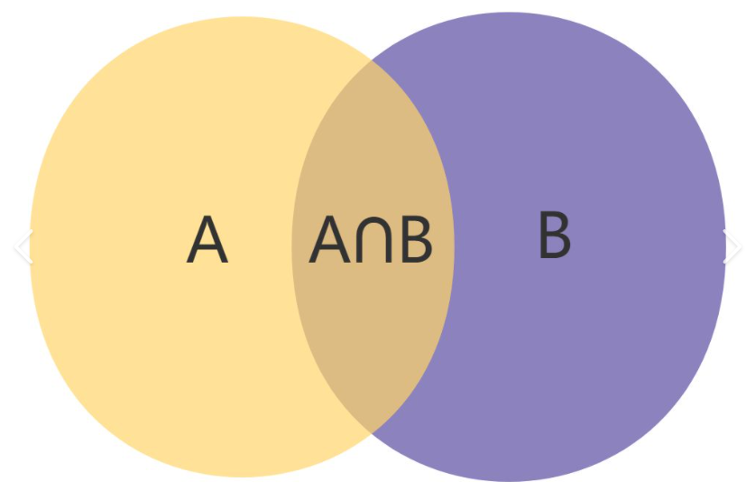
-
Subsets
A⊆B用逻辑符号表示为∀x(x∈A→x∈B)这个逻辑表达式值得思考，比如当A为空集的时候,x∈∅为假，这时这个逻辑表达式成立，因此空集是任何S集合的子集，同样我们可以得知S集合本身也是他子集的子集
-
Another look at Equality of Sets
A = B iff ∀(x∈A↔x∈B)
使用逻辑等价替换为∀[x∈A→x∈B)∧(x∈B→x∈A)]
这也就等价于A⊆B and B⊆A
-
Proper Subsets(真子集)
A是B的proper subset用逻辑表达就是∀x(x∈A→x∈B)∧∃x(x∈B∧x∈/A)
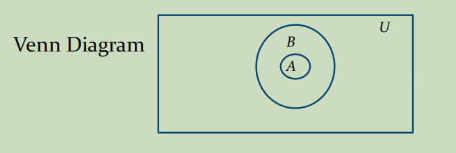
The cardinality(基数) of 有限集合就是指集合中元素的个数, 通常记作 ∣A∣
-
Power Sets(幂集)
A集合的所有子集就是the power sets of A，记作P(A) 。一个有n个元素的集合，the cardinality of the power set is 2n
需要注意的是空集的幂集即P({∅)})={∅,{∅}}，这个空集的幂集有两个元素
-
Odered n-Tuples
有序n元组是一个(a1,a2,a3...,an)的一个有序集合，tuple 以a1作为第一个元素。。。
2-tuple也叫做pairs这个就好像键值对一样。。
A×B={(a,b)∣a∈A∧b∈B}
有多少个集合相乘最终的结果就是几元组
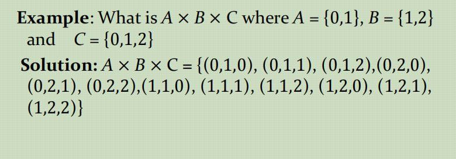
- Truth Sets of Quantifiers
{x∈D∣P(x)}前面的D是domain 后面的P(x)就是谓词函数
最终得到的结果就用集合表示.
- Union
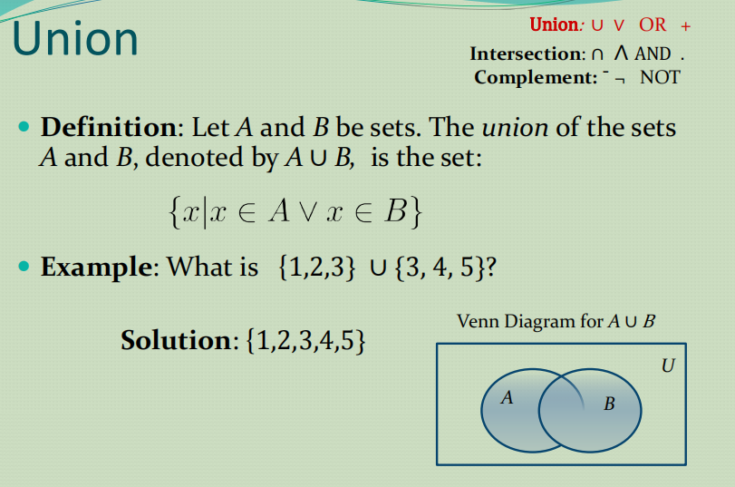
- Intersection
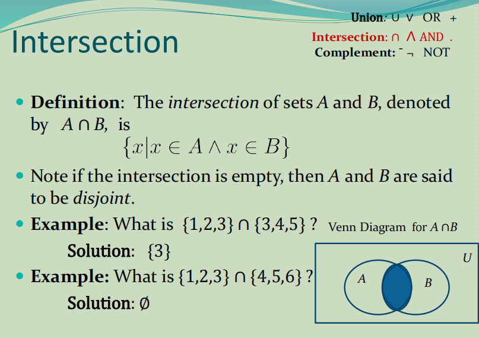
- Complement
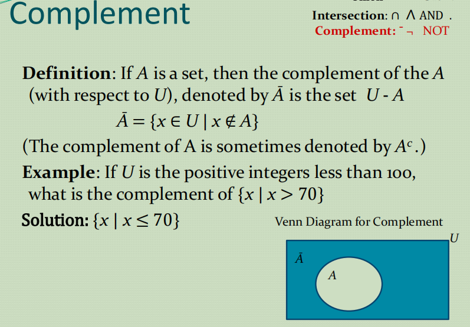
- Difference(差集)
给出两个集合，集合A和集合B A - B表达的就是在集合A中但不在集合B中的集合
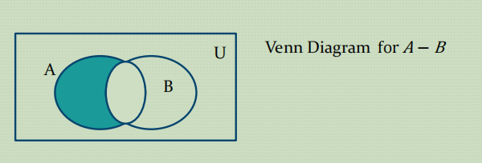
- The Cardinality of the Union of Two Sets
就是说∣A∪B∣=∣A∣+∣B∣−∣A∩B∣
通俗来讲，就是要排除二者的公共部分.
- Normal
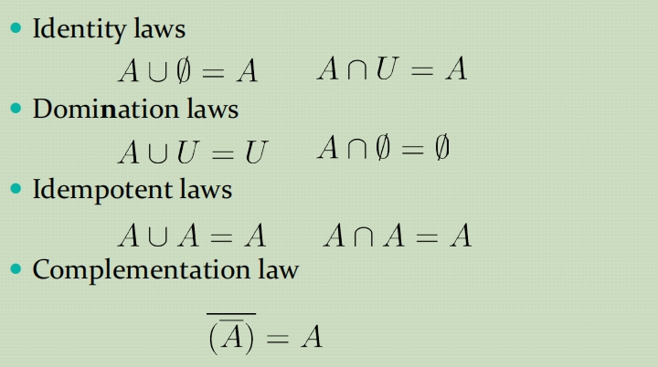
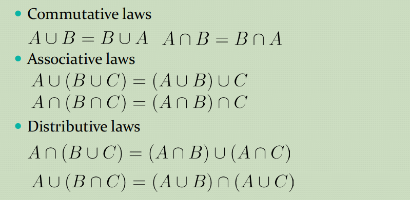
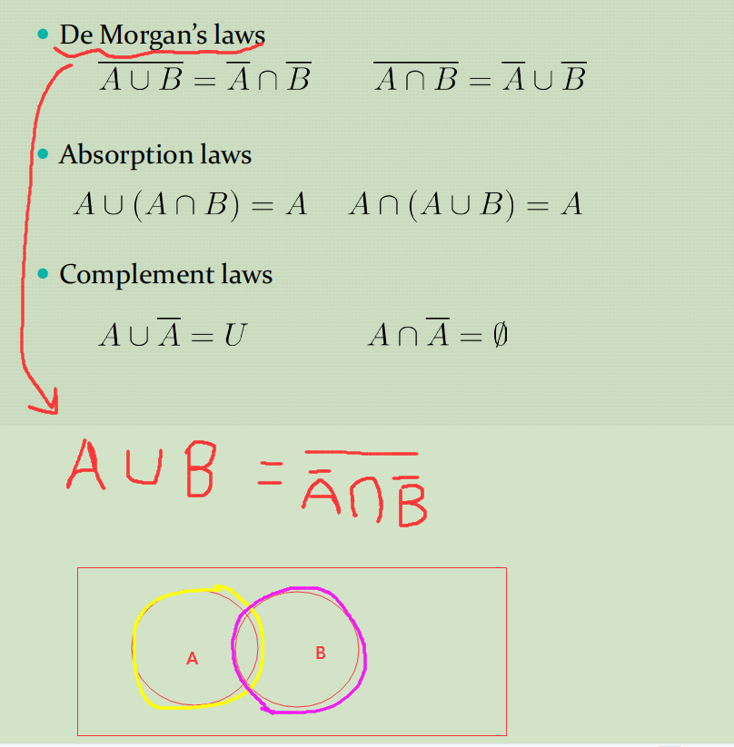
上图中，一个形象的比喻就是在一个纸片上面打了A洞 另一个纸片打了B洞，将纸片合起来把两个纸片中有洞的地方全部捅穿，得到的打穿部分就是结果
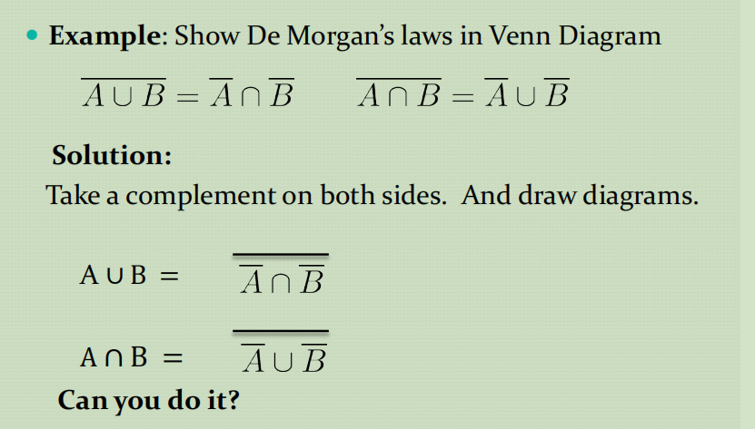